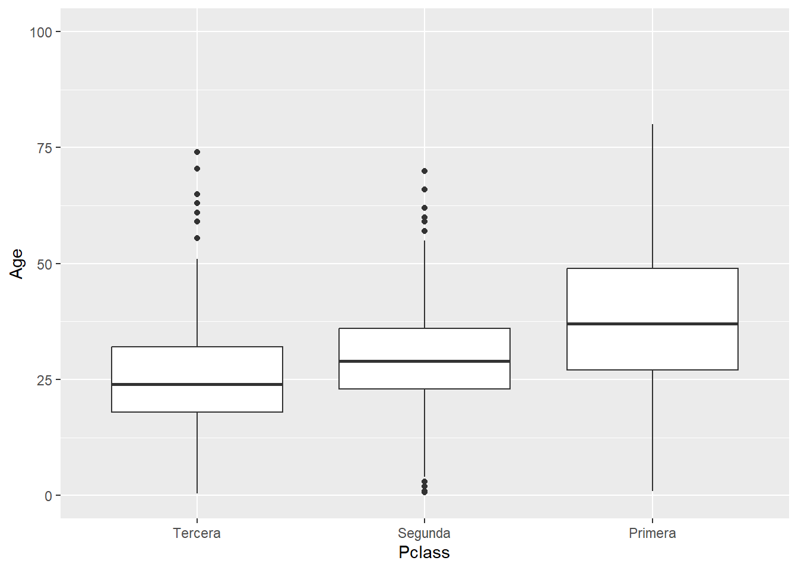
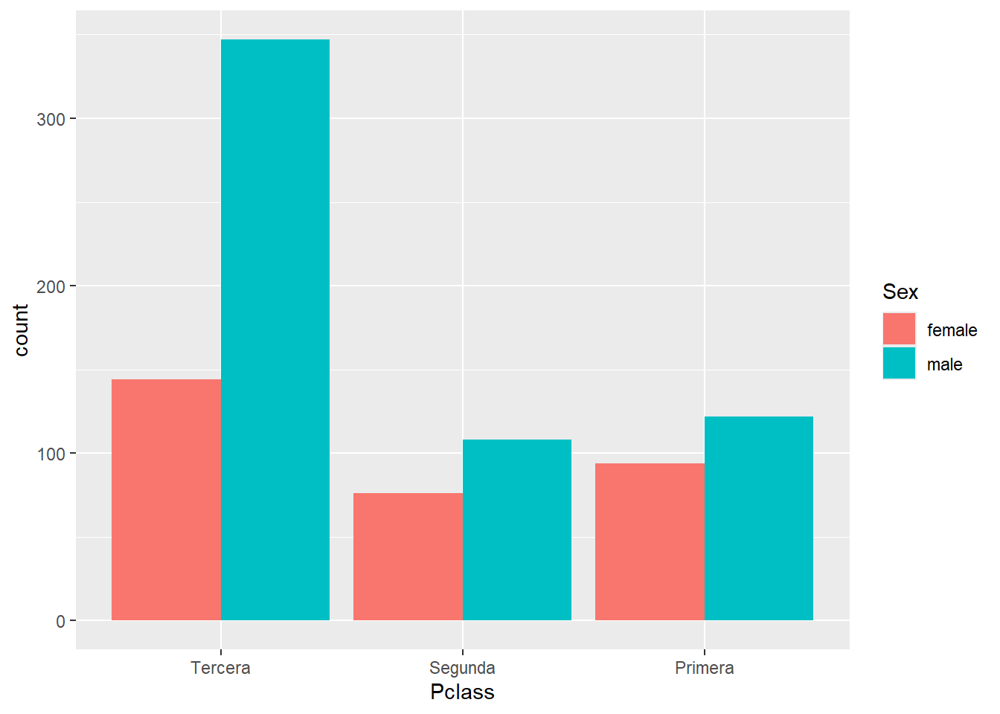
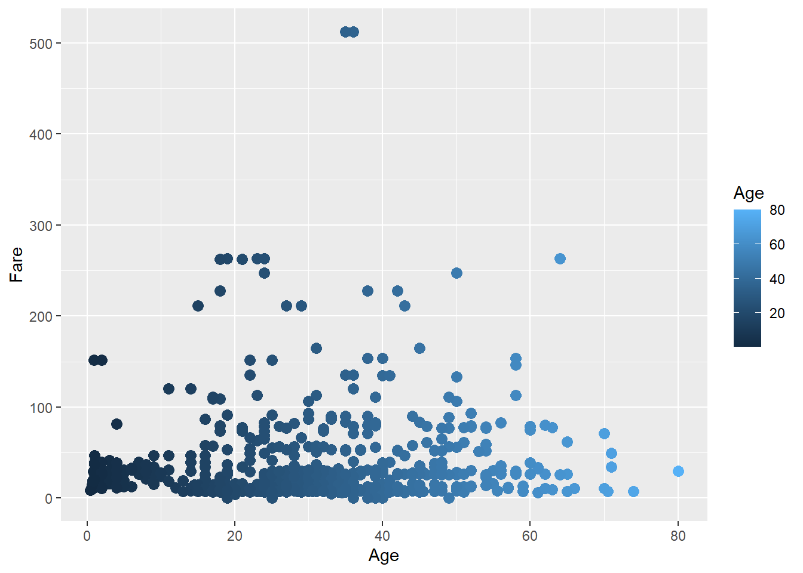
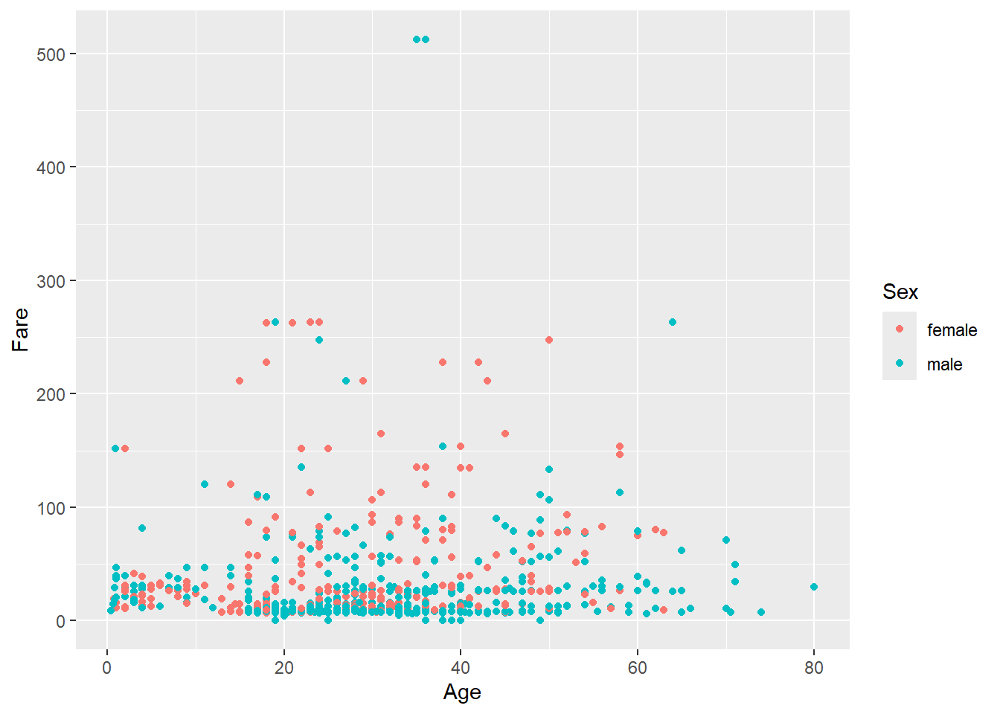
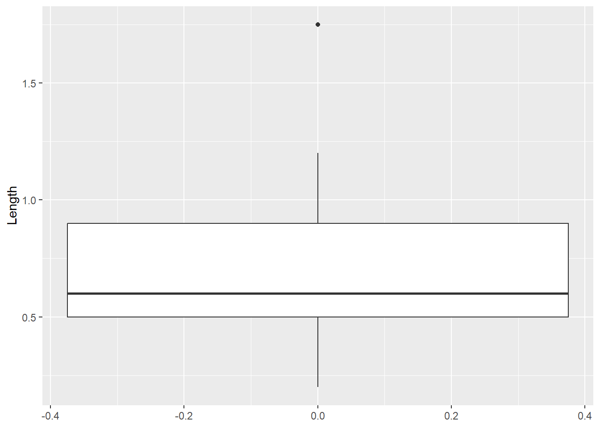

Aprender la filosofía y funciones básicas del paquete de visualización de datos {ggplot2}.
Entender y aplicar funciones avanzadas de {ggplot2}.
Ser capaces de generar gráficos publicables en un artículo científico.
Aprender a explorar diferentes tipos de datos para su posterior análisis.
2 Introducción a la visualización de datos
La visualización de datos es una disciplina cuyo fin es mapear datos de forma gráfica para comunicar un mensaje. En investigación se usa principalmente en los análisis exploratorios (durante la fase de entendimiento de los datos) y en la comunicación de los resultados.
La representación gráfica de nuestras ideas o resultados de investigación es esencial para comunicar de forma efectiva nuestra interpretación de los datos y es clave si queremos causar cierto impacto en el interlocutor. Algunos estudios sugieren que el tiempo medio que el usuario emplea en ojear una página web es de unos segundos, pero si hay algo que consigue atraer su atención entonces el tiempo se incrementa exponencialmente. Este atractor en el mundo científico puede ser un buen gráfico de resultados o un buen resumen gráfico.
{ggplot2} está escrito en R siguiendo la gramática de gráficos (gg). Por ello, al utilizarlo, el usuario tiene que pensar como cuando está haciendo un dibujo a mano y pensar en ir añadiendo diferentes capas a la creación. El flujo de trabajo es crear un gráfico vacío, añadir una capa con los datos, añadir una capa con las etiquetas, etc.
Creación de una pintura por capas, como en la gramática de gráficos. https://www.donnacowan.ca/category/animated-gifs/
Otra característica de {ggplot2} además del trabajo por capas es que precisa de datos ordenados para que se ejecute de forma óptima.
üí°Recordamos que en una tabla de datos ordenados (Tidy data) cada columna representa una variable, cada fila es una observaci√≥n y cada celda contiene un único valor.
Se necesitan tres capas básicas para crear un gráfico con {ggplot2}:
Los datos (data).
Las geometrías (geom): definen el tipo de gráfico (de puntos, de barras, etc.).
Los aesthetics: características visuales de las geometrías (p. ej. la posición, el color) definidas por las variables de nuestros datos.
Las capas se conectan entre sí con el símbolo +, que siempre debe ir colocado al final de la línea de código si queremos seguir añadiendo capas al gráfico. Todas las capas que se pueden incluir están recogidas en la cheat sheet de {ggplot2} de Posit.
üí° Se utiliza el s√≠mbolo + porque {ggplot2} es anterior al pipe (|>) y cambiar + por el pipe requer√≠r√≠a muchos reajustes en un mont√≥n de paquetes.
# install.packages("titanic")library(tidyverse)#Cargamos los datostitanic <- titanic::titanic_train head(titanic)
PassengerId Survived Pclass
1 1 0 3
2 2 1 1
3 3 1 3
4 4 1 1
5 5 0 3
6 6 0 3
Name Sex Age SibSp Parch
1 Braund, Mr. Owen Harris male 22 1 0
2 Cumings, Mrs. John Bradley (Florence Briggs Thayer) female 38 1 0
3 Heikkinen, Miss. Laina female 26 0 0
4 Futrelle, Mrs. Jacques Heath (Lily May Peel) female 35 1 0
5 Allen, Mr. William Henry male 35 0 0
6 Moran, Mr. James male NA 0 0
Ticket Fare Cabin Embarked
1 A/5 21171 7.2500 S
2 PC 17599 71.2833 C85 C
3 STON/O2. 3101282 7.9250 S
4 113803 53.1000 C123 S
5 373450 8.0500 S
6 330877 8.4583 Q
# PassengerId: Id del pasajero# Survived: 1-si, 0-no# Pclass: clase del pasajero# Name: nombre Name# Sex: sexo# Age: edad# SibSp: numero de hermanos + parejas a bordo# Parch: numero de progenitores + hijos a bordo# Ticket: numero de billete# Fare: tarifa# Cabin: camarote# Embarked: puerta de embarqueggplot(data = titanic)
ggplot(data = titanic, aes(x = Age, y = Fare))
ggplot() +geom_point(data = titanic, aes(x = Age, y = Fare)) #Los datos se pueden colocar dentro de la funcion ggplot si se van a usar los mismos en todas las geometrias
ggplot() +geom_jitter(data = titanic, aes(x = Pclass, y = Fare))
# Como guardar plots satisfactoriosplotqmegusta <-ggplot() +geom_point(data = titanic, aes(x = Age, y = Fare))ggsave(filename ="farebyage.jpg", plot = plotqmegusta, width =12, height =9, units ="cm", dpi =300)ggsave(filename ="farebyage.pdf", plot = plotqmegusta, width =12, height =9, units ="cm")# Se pueden combinar varias geometriasggplot(data = titanic) +geom_point(aes(x = Age, y = Fare)) +geom_smooth(aes(x = Age, y = Fare))
üí°Algunas revistas cient√≠ficas dan especificaciones muy detalladas sobre c√≥mo tienen que ser los gráficos (p. ej. Science). Cuando no tenemos una referencia clara recomendamos pensar en formato A4 (21 x 29,7 cm) y que todos los elementos visuales del gráfico queden visibles cuando se guarda dentro de estos l√≠mites de tama√±o.
3.0.1 Ejercicio
Representa un gráfico para ver la relación entre el sexo de los pasajeros y la clase.
pnumcat +labs(title ="Edad de los pasajeros según su clase", x ="Clase", y ="Edad (años)") #title, subtitle, x, y, caption
4.2 Sistema de coordenadas
El sistema de coordenadas por defecto en un gráfico de ggplot() es el cartesiano. Si queremos hacer zoom en nuestro gráfico tendremos que cambiar los límites del sistema de coordenadas.
pnumcat +coord_cartesian(ylim =c(0, 100))

4.2.1 Ejercicio
Cambia la posición de los ejes X e Y en el sistema de coordenadas de pnumcat.
4.3 Faceting
Los facets dividen el gráfico en subgráficos basados en el valor de una o varias variables categóricas. Las facetas son muy útiles en exploración de datos. Hay dos funciones para facetar: facet_grid() y facet_wrap().
miplot2 <-ggplot(data = titanic, aes(x = Age, y = Fare, color = Sex)) +geom_point() miplot2
Con las funciones y argumenos de posición podemos recolocar geometrias que de otro modo ocuparían el mismo espacio.
ggplot(data = titanic) +geom_bar(aes(x = Pclass, fill = Sex))
ggplot(data = titanic) +geom_bar(aes(x = Pclass, fill = Sex), position ="dodge") #esquivar

ggplot(data = titanic) +geom_bar(aes(x = Pclass, fill = Sex), position ="fill") #rellenar
4.5 Escalas
Sirven para personalizar los aesthetics. Las funciones de la familia scale siempre tienen la misma estructura: scale_aesthetic que se personaliza con _ tipo de escala (p. ej. continua, discreta, manual, etc.).
üëÄ Un error muy común es cambiar los ejes del gráfico con las funciones scale_x_continuous() o scale_y_continuous() cuando lo que queremos es hacer zoom. Fijate en las diferencias en el siguiente ejemplo.
ggplot(data = titanic) +geom_boxplot(aes(x = Pclass, y = Age))
ggplot(data = titanic, aes(x = Age, y = Fare, color = Age)) +geom_point(size =10)
Warning: Removed 177 rows containing missing values or values outside the scale range
(`geom_point()`).

4.6 Los colores en R
Las paletas de colores tipo manual y gradient se personalizan con el nombre o código del color.
üí°Con esta herramienta puedes elegir entre cientos de colores y con esta crear tu propia paleta.
Las paletas tipo brewer y distiller utilizan paletas de colores que pueden ser secuenciales, cualitativas o divergentes, que aunque tienen utilidad en gran variedad de situaciones, están diseñadas para trabajar con mapas o a escalas pequeñas.
Las paletas HCL (hue-chroma-luminance) son paletas muy populares que tienen su propia función (p. ej. colores para representar batimetría). De entre ellas, Viridis se he vuelto muy popular porque está diseñada para que personas con distintos tipos de daltonismo puedan distinguir los colores.
RColorBrewer::display.brewer.all()
RColorBrewer::brewer.pal(name ="Set3", n =6) # para crear paleta
hcl.cl> require("graphics")
hcl.cl> # color wheels in RGB/HSV and HCL space
hcl.cl> par(mfrow = c(2, 2))
hcl.cl> pie(rep(1, 12), col = rainbow(12), main = "RGB/HSV")
hcl.cl> pie(rep(1, 12), col = hcl.colors(12, "Set 2"), main = "HCL")
hcl.cl> par(mfrow = c(1, 1))
hcl.cl> ## color swatches for RGB/HSV palettes
hcl.cl> demo.pal <-
hcl.cl+ function(n, border = if (n < 32) "light gray" else NA,
hcl.cl+ main = paste("color palettes; n=", n),
hcl.cl+ ch.col = c("rainbow(n, start=.7, end=.1)", "heat.colors(n)",
hcl.cl+ "terrain.colors(n)", "topo.colors(n)",
hcl.cl+ "cm.colors(n)"))
hcl.cl+ {
hcl.cl+ nt <- length(ch.col)
hcl.cl+ i <- 1:n; j <- n / nt; d <- j/6; dy <- 2*d
hcl.cl+ plot(i, i+d, type = "n", yaxt = "n", ylab = "", main = main)
hcl.cl+ for (k in 1:nt) {
hcl.cl+ rect(i-.5, (k-1)*j+ dy, i+.4, k*j,
hcl.cl+ col = eval(str2lang(ch.col[k])), border = border)
hcl.cl+ text(2*j, k * j + dy/4, ch.col[k])
hcl.cl+ }
hcl.cl+ }
hcl.cl> demo.pal(16)
# Viridis ggplot(data = titanic, aes(x = Age, y = Fare, color = Age)) +geom_point() +scale_color_gradientn(colours =hcl.colors(12, "viridis")) ggplot(data = titanic, aes(x = Age, y = Fare, color = Age)) +geom_point() +scale_color_viridis_c()
üí°Aqu√≠ puedes encontrar más informaci√≥n sobre c√≥mo utilizar colores en {ggplot2}.
4.7 Temas
theme() permite la personalización completa de todos los elementos del gráfico. Los argumentos dentro de la función definen la parte del gráfico a cambiar. Se les asigna una función de cambio según el elemento a cambiar dentro de esa parte (parte.del.gráfico = elemento_a_cambiar(…)): line, rect, text.
?theme miplot2 +theme(axis.title.x =element_text(color ="red", face ="bold"))
4.7.1 Ejercicio
Dibuja una linea negra que represente los ejes de miplot y quita el fondo del gráfico.
Existen temas configurados por defecto y un asistente que te ayuda a personalizar el gráfico.
miplot2 +theme_classic()
miplot2 +theme_light()
miplot2 +theme_void()
4.7.2 GgthemeAssist
# install.packages("ggThemeAssist") miplot2
Warning: Removed 177 rows containing missing values or values outside the scale range
(`geom_point()`).

5 La exploración de datos y su importancia
Cuando queremos entender y/o predecir un patrón o un proceso (variable dependiente o respuesta; y), lo modelizamos en función de otras variables que pensamos que lo explican o lo predicen (variables independientes, covariables o explicativas; x). Todas ellas pueden ser a su vez cualitativas o cuantitativas.
# Comprobar los residuos del modelo que ajustemos para estas observacionespenguins |>mutate(orden =1:nrow(penguins)) |>ggplot() +geom_point(aes(x = body_mass_g, y = flipper_length_mm)) +geom_text(aes(x = body_mass_g, y = flipper_length_mm, label = orden), col ="red")

# Gestionar outliers con transformacionespellets <-read_delim(file ="pellets.txt") # Longitud y peso de heces de un gusano marinoggplot(data = pellets) +geom_boxplot(aes(y = Length))
pellets |>mutate(orden =1:n()) |>ggplot() +geom_point(aes(x = Length, y = orden)) +theme(panel.grid =element_blank(),panel.grid.major.y =element_line(size =0.1, color ="grey90"), panel.background =element_rect(fill ="white", color ="black"),legend.position ="none")
pellets |>mutate(orden =1:n()) |>ggplot() +geom_point(aes(x =log10(Length), y = orden)) +theme(panel.grid =element_blank(),panel.grid.major.y =element_line(size =0.1, color ="grey90"), panel.background =element_rect(fill ="white", color ="black"),legend.position ="none")
# Esta transformación acorta distancia hacia la derecha (quita outliers)# pero alarga algo las que están hacia la izquierda, sobre todo cuanto más cerca de 0
Visualización de las asunciones de normalidad y homogeneidad en regresiones lineales. Los puntos representan los valores observados y la línea es la línea de regresión. En cada valor de la covariable asumiminos que las observaciones están distribuidas de forma normal y con la misma dispersión. Extraido de Zuur, Ieno, and Elphick (2010).
# Una variable en las categorias de otraggplot(data = titanic) +geom_boxplot(aes(y = Fare, fill = Pclass), alpha =0.7)
Modified robust Brown-Forsythe Levene-type test based on the absolute
deviations from the median
data: titanic$Fare
Test Statistic = 118.57, p-value < 2.2e-16
# Pensar en los plots, en los residuos del modelo y no fiarse 100% de estos tests
# Histogramas y curvas de densidad para una variableggplot(data = titanic) +geom_histogram(aes(x = Age))
Aparte de las relaciones entre covariables, es necesario explorar las relaciones entre la variable respuesta y las explicativas, sobre todo para encontrar posibles patrones no lineales.
5.4.1 Variables cualitativas
ggplot(data = titanic) +geom_count(aes(x = Sex, y = Survived))
üí°Echa un vistazo al paquete {ggdist} y los raincloud plots para combinar diferentes geoms relacionadas con la distribuci√≥n de los datos.
5.4.5 Múltiples covariables
ggpairs() de {GGally} permite hacer gráficos multipanel donde, de un vistazo, se ve la distribución de cada variable dentro de una base de datos y la relación de las variables todas entre sí. Es muy útil en exploración de datos.
Los correlogramas, gráficos cuadrados o triangulares que representan matrices de correlaciones entre variables, son muy útiles para resumir en un vistazo las relaciones entre las variables de una base de datos. En este artículo encontrarás tutoriales para realizarlos utilizando diferente paquetes.
Graphics principles: el tipo de gráfico que escojamos va a depender del tipo de variable y del mensaje que queramos transmitir (es decir, del propósito).
Zuur, Alain F., Elena N. Ieno, and Chris S. Elphick. 2010. “A Protocol for Data Exploration to Avoid Common Statistical Problems: Data Exploration.”Methods in Ecology and Evolution 1 (1): 3–14. https://doi.org/10.1111/j.2041-210X.2009.00001.x.